Frequently Asked Questions/Portuguese
Perguntas Gerais
Eu sou novo! O que devo fazer?
Em primeiro lugar, crie sua conta em create your account e, se você ainda não instalou o jogo, vá para a página de download nesse link -> Download page e siga as instruções de instalação.
Dê uma olhada em Introduction to Ragnarok Online se você é novo no jogo, ou Introduction to Renewal se você já jogou Ragnarok antes da atualização Renewal.
Por outro lado, se você já é familiarizado com o jogo mas está começando no servidor, dê uma olhada na página Getting Started, que vai te colocar a par de quase tudo o que você precisa saber para começar no NovaRO.
Estou tendo erros quando tento jogar! / Estou travando (lag)!
Nossa página Troubleshooting contém os erros mais comuns e como resolvê-los e a página Lagging pode ajudá-lo a encontrar seu ping para o servidor, realizar uma rota de rastreamento e diagnosticar a fonte de seu lag.
Perguntas sobre Gameplay
Qual é o nível/nível de Classe/Status/ASPD máximos?
Para mais informações sobre o servidor, visite a página Server Information.
Onde devo subir de nível?
Dê uma olhada no nosso Leveling Guide para novos jogadores.
Onde eu posso mudar de Classe?
O NPC Job Changer e outros NPCs convenientes podem ser encontrados no prédio do Main Office em Prontera, um pouco à esquerda do centro da cidade.
Lá você também pode encontrar uma grande variedade de NPCs convenientes e lojas de itens.
Posso mudar de Classe para uma 3ª Classe sem transcender/renascer?
É possível mas, você vai perder vários benefícios se você não passar pelo processo de renascimento/transcendência e é altamente recomendado que seja feito o processo de renascimento. Quando transcender/renascer, você ganha MaxHP, MaxSP, e pontos de status adicionais. Você será capaz de aprender skills exclusivas para transcendentais e utilizar equipamentos igualmente exclusivos. Também é altamente recomendado que alcance nível de Classe 70 antes de mudar para a 3ª Classe, pois qualquer ponto de skill faltando será perdido para sempre.
Esta é a progressão típica de personagem:
| Classe Inicial | 1ª Classe | 2ª Classe
(99/50) |
Classe Transcendental |
1ª Classe Trans | 2ª Classe Trans
(99/70) |
3ª Classe Trans
(200/70) |
|---|---|---|---|---|---|---|
Novice
|
Swordman
|
Knight
|
High Novice
|
High Swordman
|
Lord Knight
|
Rune Knight
|
|
Crusader
|
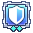
Paladin
|
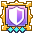
Royal Guard
| ||||
Merchant
|
Blacksmith
|
High Merchant
|
Mastersmith
|
Mechanic
| ||
Alchemist
|
Biochemist
|
Genetic
| ||||
| 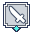
Thief
|
Assassin
|
High Thief
|
Assassin Cross
|
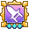
Guillotine Cross
| ||
|
Rogue
|
Stalker
|
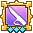
Shadow Chaser
| ||||
| 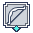
Archer
|
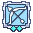
Hunter
|
High Archer
|
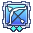
Sniper
|
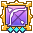
Ranger
| ||
| 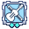
Bard
|
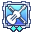
Clown
|
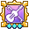
Minstrel
| ||||
| 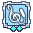
Dancer
|
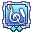
Gypsy
|
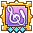
Wanderer
| ||||
|
Mage
|
Wizard
|
High Mage
|
High Wizard
|
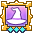
Warlock
| ||
|
Sage
|
Scholar
|
Sorcerer
| ||||
Acolyte
|
Priest
|
High Acolyte
|
High Priest
|
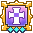
Arch Bishop
| ||
|
Monk
|
Champion
|
Sura
|
Em NovaRO, troca entre classes não está habilitado. Em outras palavras, se você foi um Assassin e transcendeu em High Novice, você só pode mudar de classe para High Thief, depois para Assassin Cross, e por fim Guillotine Cross.
Classes expandidas e a raça Doram progridem tipicamente como segue abaixo. Note que eles não podem transcender/renascer, então seu nível não vai ser resetado para 1/1 quando mudar de classe.
| Classe Inicial | 1ª Classe | 2ª Classe | |
|---|---|---|---|
Novice
|
Super Novice (99/99)
|
Expanded Super Novice (200/70)
| |
| 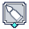
Gunslinger (99/70)
|
Rebellion (200/70)
| ||
Ninja (99/70) |
Kagerou (200/70)
| ||
Oboro (200/70)
| |||
| 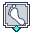
Taekwon Kid
|
Taekwon Master (99/50)
|
Star Emperor (200/70) | |
|
Soul Linker (99/50)
|
Soul Reaper (200/70) | ||
| 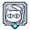
Summoner (200/60)
| |||
Existem algumas penalidades quando se joga com uma classe não-transcendental:
- Você vai ter menos HP e SP, e menos pontos de status para distribuir.
- Você não pode utilizar equipamentos exclusivos para transcendentais.
Eu não consigo decidir com que Classe jogar, me ajude!
Apesar de sua escolha de classe se basear muito no seu estilo de jogo, você pode jogar e se divertir com qualquer classe.
Escolhas populares para iniciantes são: Ranger, Rune Knight, Guillotine Cross e Mechanic.
Eu mudei de Classe mas agora estou preso no nível 99!
É um erro visual comum. Você pode:
- Continuar adquirindo experiência. Quando você alcançar o nível 100, a barra de experiência vai se corrigir automaticamente.
- Relogar. Quando você logar novamente sua barra de experiência vai mostrar a quantidade correta de EXP.
Como adquirir consumíveis/catalizadores específicos da Classe?
| Tipo | Classe aplicável | Como obter |
|---|---|---|
| 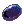 Quality Rough Runestone e 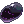 General Rough Runestone | Rune Knight | NPC Rune Merchant no Main Office. Veja Rune Mastery. |
| 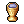 Holy Water | Royal Guard, Priest | NPC Tool Dealer (no ponto de respawn em quase todas as cidades). Crie com a skill  Aqua Benedicta. Aqua Benedicta.
|
| Pecopeco, Dragon, Griffon, Cart, Mado Gear, Falcons, Wargs | Knight, Crusader, Merchant, Mechanic, Hunter, Ranger | NPC Universal Rental (no ponto de respawn em quase todas as cidade) |
| Cannon Ball, Magic Fuel, outros acessórios e suprimentos para Mechanic | Mechanic, Genetic | NPC Mado Dealer no Main Office. |
Manuais para  Pharmacy, Pharmacy,  Special Pharmacy, e Special Pharmacy, e  Mixed Cooking Mixed Cooking
|
Alchemist, Biochemist, Genetic | Guilda de Alchemist em Aldebaran /navi alde_alche 27/182
|
| Materiais para Pharmacy, Special Pharmacy, e Mixed Cooking
|
Alchemist, Biochemist, Genetic | NPC Alchemy Supplies, em Aldebaran /navi aldebaran 135/111
|
| Embryo | Alchemist, Biochemist, Genetic | Crie com Pharmacy. Compre Embryo no mercado @go market.
|
| Comida de Homunculus (Scell, Garlet, Zargon) | Alchemist, Biochemist | NPC Tool Dealer em Geffen /navi geffen_in 75/144
|
| Homunculus, Homunculus S, e Cute Pet Food | Alchemist, Biochemist (Homunculus), Genetic (Homunculus S), todas (Cute Pet) | NPC Pet Groomer, em Prontera /navi prontera 217/211. Veja Pet System.
|
| Poison Bottle | Guillotine Cross | Pode ser produzida ou obtida trocando Thanks Invest Tickets por Red Paw Jelly Bag com a Thanks Ticket Machine em Malangdo /navi malangdo 214/219. Veja Guild Dungeon Investment System.
|
| 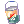 Surface Paint e 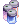 Face Paint | Shadow Chaser | NPC Part-Timer na Shadow Workshop, em Prontera /navi s_atelier 16/110
|
| 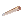 Falcon Flute | Hunter, Sniper, Ranger | NPC Falcon Flute Trader na Hunter's Guild, em Hugel /navi hu_in01 385/306
|
| 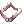 Special Alloy Trap e 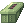 Special Alloy Trap Box | Ranger, Shadow Chaser, Rebellion | NPC Ammunitions Expert no Main Office e NPC Trap Specialist em Midgard Camp /navi mid_camp 130/284
|
| Arrow, Arrow Quiver | Ranger, Minstrel, Wanderer, Thief, Shadow Chaser | NPC Arrow Dealer no Main Office. NPC Arrow Dealer em Payon /navi payon 168/112. NPC Inventor Jaax dentro da Equipment Shop de Payon /navi payon_in01 5/133.
|
| 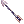 Hunting Arrow, 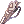 Hunting Arrow Quiver, 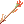 Elven Arrow, 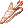 Elven Arrow Quiver | Hunter, Sniper, Ranger; Minstrel, Wanderer | Mora Tool Dealer, Quiver Maker /navi mora 103/118
|
| Special Arrows (ex.: Immaterial Arrow) | Ranger, Minstrel, Wanderer, Thief, Shadow Chaser | Crie com Arrow Crafting. |
| 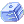 Throat Lozenge (Pastilha Refrescante) e Regrettable Tears | Minstrel, Wanderer | NPC Harive em Comodo /navi comodo 195/161
|
| Spellbook (magias de Mage, Wizard, Warlock) | Warlock | NPC Lea na Mage Guild em Geffen /navi geffen_in 174/112
|
| Comet Spell Book e Tetra Vortex Spell Book | Warlock (Lv 140) | Ultimate Spell Books Quest |
| Scarlet, Yellow, Lime Green, e Indigo Wish Points | Mechanic, Sorcerer | NPC Point Merchant no Main Office, NPC Point Merchant no Midgard Camp /navi mid_camp 223/237
|
| Red, Yellow, e Blue Gemstones | Acolyte, Priest, Wizard, Sage, etc | NPC Tool Dealer (no ponto de respawn em quase todas as cidades) |
| Empty Bottle | Acolyte, Alchemist | NPC Tool Dealer (no ponto de respawn em quase todas as cidades) |
| Ammunition e Cartridge Shop | Gunslinger, Rebellion | NPC Ammunitions Expert, no Main Office. |
| Cartridge Maker | Gunslinger, Rebellion | NPC Magazine Dealer Kyle, no Main Office. |
| Armas de Gunslinger | Gunslinger | Gunslinger Guild, em Einbroch /navi que_ng 172/86 e NPC Trading Merchant, na Tool Shop de Izlude /navi izlude_in 71/102
|
| Armas de Rebellion | Rebellion | NPC Firearms Dealer, no Main Office. |
| Shuriken, Kunai, Kunai Scrolls, Elemental Charms, Magic Orbs | Ninja, Kagerou, Oboro | NPC Ninja Supplier, no Main Office. |
| Artesãos de equipamentos ninja | Ninja, Kagerou, Oboro | NPC Master Weapon Craftsman e NPC Master Armor Craftsman, no Ninja Hideout, em Amatsu /navi que_ng 21/70
|
| 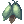 Catnip Fruit, 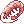 Shrimp, e equipamentos Doram de nível 100 | Summoner (Doram) | Doram Shop, no Main Office e Doram Shop em Lasagna /navi lasagna 165/163
|
Que equipamento eu devo usar? / Como construir meu personagem?
Além de perguntar para jogadores no jogo, ou em canais específicos da Classe Discord, a wiki tem uma compilação de guias feitos por jogadores em Class Guides.
Jogadores estão constantemente experimentando novos e antigos equipamentos e descobrindo novas interações, o que significa que o melhor conjunto pode mudar com frequência.
Quanta DEX eu preciso para alcançar conjuração instantânea?
Veja Também: Cast Time
No Renewal, você precisa (DEX x 2) + INT = 530 para eliminar o Tempo de Conjuração Variável (Variable Cast Time - VCT). Alguns exemplos considerando status total:
- 530 INT
- 265 DEX
- 170 INT e 180 DEX
- 190 INT e 170 DEX
Seus status de INT e DEX podem reduzir o VCT. Entretanto, isso não vai reduzir o Tempo de Conjuração Fixo (Fixed Cast Time), que só pode ser reduzido por certos buffs ou equipamentos.
Tenha em mente que a porcentagem (%) de redução em equipamentos não vai acumular com a redução fornecida pela DEX e INT, mas multiplicativamente, significando que 265 DEX total (geralmente 50% de redução no VCT) combinado com 50% VCT de redução pelo equipamento vai resultar num total de 75% de redução em geral.
Existem várias formas de reduzir o tempo de conjuração em geral:
- Utilizando equipamentos e cartas com redução de conjuração (ex.: Crown of Deceit, Kathryne Keyron Card, Cunning Shadow Set).
- Skills de Buff (ex.: Clementia e Sacrament de Archbishop, 16th Night de Kagerou/Oboro, Summon Ventus + Elemental Control Lv 1 de Sorcerer).
- Consumindo comidas que aumentam status (particularmente comidas de INT e DEX).
- Ter o buff da Classe Bard Poem of Bragi para redução de Pós-Conjuração (After Cast Delay - global cooldown).
- Usar Temporal DEX Boots e ter 120 DEX de base. Isso vai reduzir o Tempo de Conjuração Fixo em 0.5 segundos.
Note que a % de redução do Tempo de Conjuração Fixo não vai acumular com outras fontes de redução de Tempo de Conjuração Fixo. Somente a % mais alta de redução do Tempo de Conjuração Fixo será aplicada.
Como eu deleto meu personagem?
- Vá para a tela de Seleção de Personagem. Selecione o personagem que você quer deletar e clique no botão Delete.
- O personagem vai sentar e um marcador de tempo vai aparecer abaixo dele (ele deve seguir o horário do seu computador).
- Se você tiver certeza que quer deleta-lo, deixe-o sentado e retorne em 24 horas. Nesse meio tempo, não clique em Cancel, e não logue com esse personagem.
- Após 24 horas, clique em Del e você será solicitado a inserir uma senha "Delete Password," que é a sua conta de email. Você pode conferir sua conta de email fazendo login no site.
- Se você mudou de ideia e não deseja mais deletar o personagem, clique Cancel. O marcador de tempo vai desaparecer e você poderá logar com o personagem como sempre.
- Você pode ignorar o período de 24 horas definindo um PIN em sua conta no site.
O que é PC, R>, LF>, LFM>, LFP>, etc?
- BMD : Bios Island, Morse's Cave e Temple of the Demon God, respectivamente.
- DPS : Dano por segundo (Damage per Second). Geralmente se refere a Ranger ou Rebellion pois eles são os que normalmente dão mais dano na maioria dos grupos.
- LF : Procurando por (Looking For)
- LFM : Procurando por membros (Looking For Members). Pode ser utilizado para recrutar membros para o grupo.
- LFP : Procurando por grupo (Looking For Party). Pode ser utilizado quando você quer entrar em um grupo. Você também deve anunciar seu nível.
- MH : Monster Hunter
- NONR : Sem oferta, Sem resposta (No Offer, No Reply). Geralmente significa que você deve anunciar seu preço quando se oferecer para comprar ou vender alguma coisa, e tentar pechinchar com a outra pessoa.
- OGH : Old Glast Heim
- PC : Verificação de preço (Price Check). Você deve fazer isso no canal #trade no jogo.
- R : Recrutando (Recruiting). Pode ser utilizado para recrutar membros para grupos ou guildas.
- RGM : Recrutando membros para guilda (Recruiting Guild Members).
- RTG : Pronto para ir (Ready to Go).
- Isso pode indicar que o grupo vai iniciar a instância assim que você chegar, ou que eles já entraram na instância e você deve se apressar e se juntar a eles. Você deve cuidar com o segundo caso, pois algumas instâncias pedem uma quest de matar/caçar um inimigo específico que apenas aparece em certo ponto da instância, e só vai contar para você se estiver presente quando o grupo matar o inimigo. Por exemplo, se um líder/membro de grupo OGH diz que o grupo está RTG, é melhor você perguntar se eles já entraram na instância e se já mataram Root of Corruption. Se o grupo já o matou, não irá contar para você e é melhor você entrar em outro grupo para poder pegar a recompensa.
- WTB : Disposto a comprar (Willing To Buy).
Como farmar Zeny? Onde devo ir para farmar Zeny?
A forma mais comum para farmar Zeny é vendendo o loot de monstros para o NPC. Geralmente, o farm é feito após ter subido um pouco de nível e ter trocado os equipamentos iniciais, entretanto, existem alguns mapas que te permitem adquirir uma quantidade decente de Zeny no início da sua jornada. Abaixo está a lista desses mapas, seus níveis recomendados e alguns dos itens que você deve procurar:
- Gonryun Dungeon 1F (gon_dun01): Níveis 90~100. Honey e Royal Jelly.
- Audumra Grass Land (ra_fild01): Níveis 100+. Blood of Wolf (Ingrediente de comida +20 INT) e Crimson Dagger.
- Magma Dungeon 2F (mag_dun02): Níveis 100~120. Todo o loot, inclusive Equipamento Doram que pode ser trocado por Doram Tokens.
- Rachel Sanctuary 1F - 3F (ra_san01/02/03): Nível 110+. Bloody Runes, Witch Starsand e Prickly Fruit.
- Juperos 1F (juperos_01):Níveis 115~125. Todo o loot.
- Geffenia (gefenia01/02/03/04): Nível 120+. Diamond Ring, Gold Ring, Royal Jelly e Crimson Violins.
Criar um Merchant para ter  Overcharge e
Overcharge e  Discount vai te ajudar muito a maximizar o zeny que você adquire vendendo loot para NPCs e também reduzindo o custo de consumíveis. O mesmo Merchant também terá acesso a skill
Discount vai te ajudar muito a maximizar o zeny que você adquire vendendo loot para NPCs e também reduzindo o custo de consumíveis. O mesmo Merchant também terá acesso a skill  Vending, permitindo que você venda qualquer coisa de valor que você possa encontrar para outros jogadores no Mercado de NovaRO (@go 37).
Vending, permitindo que você venda qualquer coisa de valor que você possa encontrar para outros jogadores no Mercado de NovaRO (@go 37).
Utilizando @autotrade (@at) enquanto usa Vending vai te deslogar do personagem, mas manter sua loja online. Tenha em mente que você não poderá usar outro personagem da mesma conta enquanto estiver em autotrade.
Alguns loots que podem parecer "lixo" ainda podem ser úteis, seja para uma quest, fabricação de itens (crafting/brewing), ou utilizado como catalizador de skills. Você pode fazer um dinheiro rápido estocando esses materiais e vendendo para outros jogadores. Você pode utilizar o comando @whobuys (@wb) no jogo para ver se alguém está comprando um item.
O que é e como posso abrir uma loja de compra?
Lojas de compra podem ser abertas com qualquer personagem, dê uma olhada na página da skill 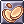 Buying Store para mais informações.
Como eu adquiro equipamento X ou Y?
Existem diversos equipamentos disponíveis no jogo e várias formas de obtê-los. Você pode conferir a maioria deles na página Equipment Guides.
A forma mais comum de obtê-los é farmando de monstros nos mapas em geral, dungeons ou instâncias, confira a página Instances. Muitas áreas requerem que você complete um quest como pré-requisito antes que você possa acessá-las.
Exite uma database de itens/monstros?
Através do comando @iteminfo (@ii) e @mobinfo (@mi), você pode acessar a informações sobre itens e monstros no jogo.
O NovaRO Market também tem descrição de itens, bem como a lista de vendas.
Outras fontes populares externas são:
- Divine Pride : Fornece muitas informações em geral sobre equipamentos, cartas, skills e monstros. Divine Pride é uma database independente, agnóstico em relação a servidores portanto nem toda informação é diretamente aplicável ao NovaRO.
- iRO Wiki : Apesar de ter sido feito para o iRO, ainda pode servir para providenciar guias de quests e informações sobre skills para algum conteúdo antigo.
Como eu posso fazer trocas maiores que 1 bilhão de Zenys?
Você pode realizar facilmente trocas de grande quantias de zeny utilizando 17 Carat Diamonds.
O que é um homunculus? Porque o meu não funciona?
Confira a página Homunculus para qualquer informação relacionada com Homunculus, inclusive como configurar sua AI e problemas que ela possa apresentar.
Perguntas Comuns de Jogadores
Em todos os casos de suporte, por favor seja sincero em todas as suas mensagens com um Game Master.
Esconder detalhes não apenas pode impedir a resolução do caso, como também pode resultar em punição.
Eu acidentalmente dropei / vendi o item errado ao NPC, o GM pode me ressarcir?
Sim, se o item não foi pego por outro jogador. Se você não tem certeza, por favor abra um support ticket. Note que nós só faremos isso uma vez, pois existem proteções ativas para drop. Lembre de manter todos os itens valiosos na aba Favoritos (Favourites) e bloqueie a venda para NPC.
Emprestei meus itens e o jogador se recusa a me devolver. Um GM pode me ajudar?
Se você tem uma prova de que o item foi emprestado, você pode abrir uma denúncia por fraude. Note que seu item será deletado, pois GMs não irão restituir ou devolver itens perdidos devido erro de jogadores.
Alguém logou na minha conta e roubou meus equipamentos. Um GM pode me ajudar?
Não. Compartilhamento de conta não é encorajado por um motivo e o que acontece com sua conta é sua responsabilidade. Por favor mantenha suas senhas seguras e atualize-as com frequência.
Errei um 0 quando coloquei minha loja e vendi um item abaixo do preço, posso ser restituído?
Não. GMs não irão restituir vendas entre jogadores, pois isso seria injusto com a pessoa que comprou o item.
Eu acidentalmente refinei/encantei um item e ele quebrou. Um GM pode me ressarcir ou restaurar o item?
Não. Nós não podemos oferecer suporte para itens perdidos por tentativas falhas ou incorretas de refino/encantamento.
Eu estou preso em uma instância e não consigo usar nenhuma skill. Me ajude!
Tente relogar. Se o problema ainda persistir, por favor envie uma mensagem para um GM online.
Eu não consigo adicionar pontos de skill no meu personagem!
Remova todos os seus itens equipados (incluindo aqueles na aba "costume"), e digite @clearcostume para remover qualquer efeito visual. Você deve poder adicionar pontos de skill depois disso.
Adquiri Nova Points mas não os recebi.
Por favor envie um support ticket e [GM] Nova vai resolver isso com você. Não esqueça de incluir no ticket o método de pagamento, seu email, data e a quantidade adquirida para acelerar o processo.
Esqueci minha ID da conta, como posso recupera-la?
Envie um support ticket e nós vamos enviar a ID da conta para o email registrado na conta. Se você não tem mais acesso ao email registrado na conta ou se o email é falso, você não poderá recuperar a ID da conta.
Eu encontrei um bug! Onde posso reportá-lo?
Por favor faça um post na seção bug report, com o máximo de detalhes. Se você puder, inclua screenshots ou gravações, e descreva o que foi feito para desencadear o bug, qual era o comportamento esperado etc. Inclua quando detalhes puder.
Encontrei um bot! Onde posso reportá-lo?
Reporte o que encontrou em privado com um GM no jogo ou no Discord. Providencie o máximo de detalhes. Você não precisa saber o nome do jogador para reportar uma suspeita. É simples, o nome do mapa já serve, mas detalhes como nome do jogador, classe ou skill utilizada são bem vindos é claro.
Se você sabe o nome do suspeito, você pode reportá-lo diretamente no jogo utilizando @botreport
Alguém está me assediando / não me deixa em paz! O que eu posso fazer?
Se você achar que alguma regra do servidor foi descumprida, por favor faça um post na seção player reports do fórum. Incluir screenshots ou gravações e o que o jogador reportado estava fazendo (ex.: fraudando, griefing, utilizando linguagem ofensiva) vão ajudar. Você também pode utilizar o código /ex player para bloquear mensagens desse jogador.
Como reportar infração nas regras?
Por favor use a seguinte seção para nos providenciar denuncias adequadas. Com frequência, nós não podemos punir um jogador pois não temos informações suficientes.
Utilizando o recurso replay
Este é de longe o melhor método de reportar jogadores infratores. No jogo, siga esses passos para abrir o recurso de gravação:
- Clique no botão Rec na barra de status.
- Inicia o replay, dê um nome e clique Start.
- Quando você tiver terminado de gravar, clique Stop.
- Abra sua pasta RO, vá na pasta Replay e faça o upload do arquivo no fórum ou envie diretamente a um GM se for solicitado.
Fazendo Screenshots
Faça quantas screenshots forem necessárias e depois faça o upload no fórum. Nós recomendamos utilizar o imgur para hospedar as imagens.
Em suas screenshots, por favor nos mostre que você tentou conversar com o jogador problemático e tentou primeiro resolver o problema por si.
Use o fórum
Evite solicitar auxilio de um GM para reportar infração de regras. Nós preferimos que você use o fórum para reportar tais problemas pois é mais fácil para nós vermos as evidências que você coletou.
- Submit a Support Ticket (Enviar um Ticket de suporte)
- Report a player (Reportar um jogador)
Nota de tradução: Em algumas situações coloquei a tradução e o original juntos, como o nome das classes na tabela de progressão e tipo de dano na tabela de função da classe. Assim você pode sanar suas dúvidas sobre nomes que causam confusão como novice e noviço ou genetic e bioquímico, e se acostumar com a denominação utilizada em jogo. Nomes de itens, skills e NPCs foram mantidos em inglês para não causar confusão. O ideal é que você se acostume o quanto antes a pesquisar por Phen Card e não Carta Fen (quem já não fez isso?). Algumas palavras em inglês tipicamente utilizadas em jogos foram mantidas no original e declinadas em verbo como é feito na linguagem coloquial (Ex.: farmar, logar, lag, dropar, resetar etc).